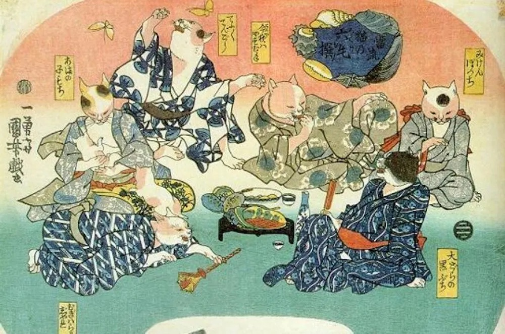
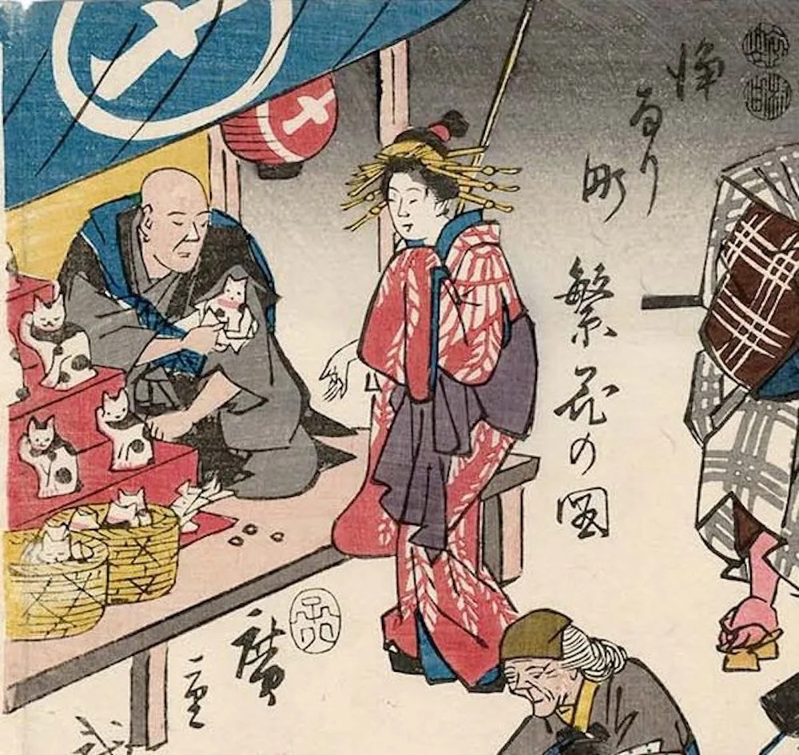
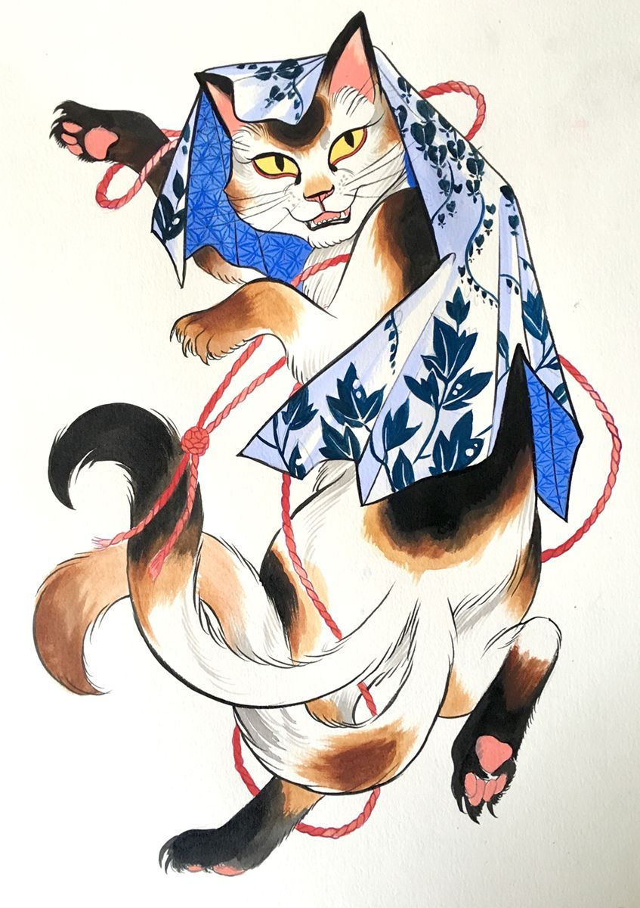
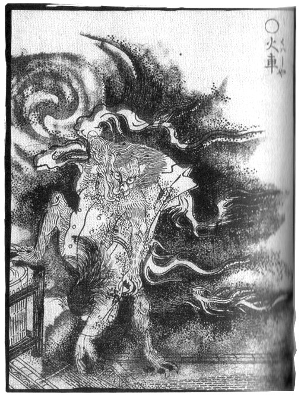
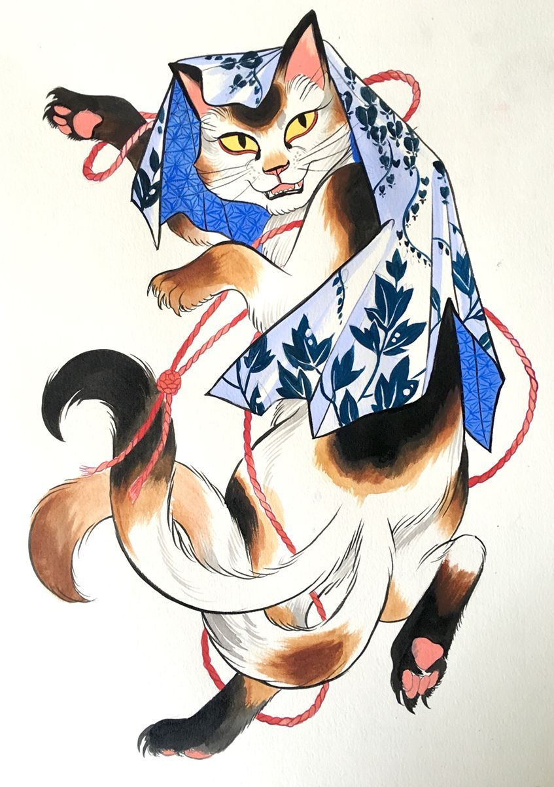
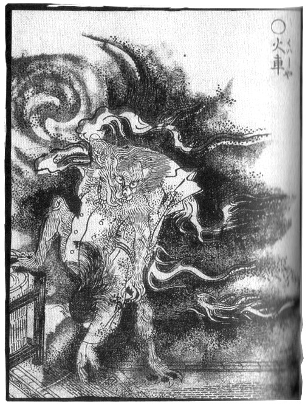
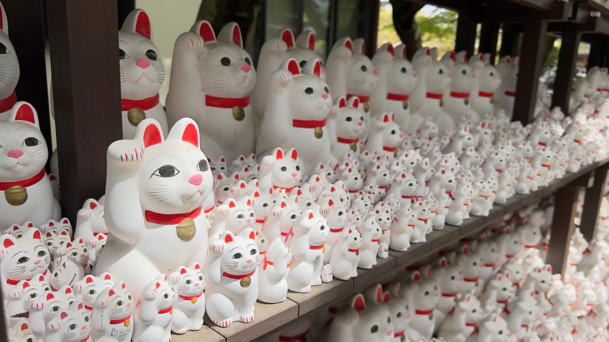

Koty w kulturze Japonii
Według statystyk z 2025 roku, w Japonii jest 9,6
milionów kotów domowych[1] (dla porównania w Polsce mamy 6,6 mln
kotów), a w niektórych miejscach, jak jedna ze słynnych kocich wysp
Aoshima, na ok 80 kocich mieszkańców przypada jedynie 4 rezydentów[2].
Pierwotnie koty przywożono na wyspy, aby pomóc kontrolować populację
gryzoni w wioskach rybackich, ale z czasem populacja kotów
eksplodowała, tworząc wyjątkowe środowisko, w którym koty były klasą
rządzącą.
Koty w Japonii od dawna zajmują bardzo szczególne
miejsce w sercach ludzi, nie tylko jako ukochane zwierzęta domowe, ale
także jako symbole wplecione w sztukę, literaturę, folklor i codzienne
życie. Koty reprezentują tam przede wszystkim szczęście, bogactwo i
pomyślność ale mają też swoją mroczną stronę. Ich udokumentowana
historia rozpoczęła się od pewnego czarnego kota na cesarskim dworze,
choć uważa się, że koty pierwotnie przybyły z Chin w VI wieku. Podczas
panowania cesarza Tenmu (631-686 n.e.), wiele pism buddyjskich było
importowanych z Chin dynastii Tang. Jednym z głównych wyzwań podczas
podróży były szkody wyrządzone przez szczury na pokładach statków.
Według esejów z okresu Edo, jest wysoce prawdopodobne, że mnisi
buddyjscy używali ich do ochrony świętych zwojów buddyjskich przed
szkodami wyrządzonymi przez myszy i szczury. Następnie koty były
trzymane jako zwierzęta domowe przez cesarza, co sprawiło, że stały
się czymś więcej niż tylko ochroną zwojów - były również cenionymi
dobrami.
Wpis z 899 roku zatytułowany
“For the love of a cat”
z dziennika młodego cesarza Udy traktuje o jego fascynacji małym
mruczkiem: “Korzystając z chwili wolnego czasu, pragnę wyrazić moją
radość z kota. Przybył łodzią jako dar dla zmarłego cesarza, otrzymany
z rąk Minamoto no Kuwashi. Kolor futra jest niezrównany. Nikt nie
potrafił znaleźć słów by go opisać, chociaż ktoś powiedział, że
przypomina najgłębszy atrament. (...) Kiedy się zwija, jest bardzo
mały, wygląda jak czarna jagoda prosa, ale kiedy się wyciąga, jest
długi, przypominając naciągnięty łuk. Źrenice jego oczu błyszczą,
olśniewająco jasne jak błyszczące igły migoczące światłem, podczas gdy
końce jego uszu sterczą prosto do góry, niewzruszenie, wyglądając jak
miseczka łyżki. Kiedy kuca, staje się kulą bez stóp, przypominającą
okrągły jadeit wyjęty z głębi jaskini. Porusza się cicho, nie wydając
ani jednego dźwięku, jak czarny smok ponad chmurami.” W X wieku koty,
takie jak ten cesarza Ichijo, miały specjalne rangi dworskie. Słudzy
musieli usługiwać tym stworzeniom i dbać o nie jak o członków rodziny
królewskiej. To były początki japońskiej obsesji na punkcie tych
puszystych stworzeń.
Społeczeństwo japońskie ewoluowało wraz z magicznymi
lisami (kitsune) i szopami (tanuki), jednak to kot jako istota spoza
znanego świata zawładnął sercami i umysłami japończyków. Dodatkowymi
składnikami nowej magicznej istoty jest ich tajemnicza natura,
zdolność do rozciągania się do pozornie nienaturalnych rozmiarów,
świecące w ciemności oczy i bezszelestny chód. Pierwsze znane
pojawienie się nadprzyrodzonego kota w Japonii nastąpiło w XII wieku.
Według doniesień, ogromny, ludożerczy, dwuogonowy kot zwany nekomata
przechadzał się po lasach obecnej prefektury Nara. Myśliwi i drwale
regularnie wchodzili do lasów wokół miasta w celach handlowych. Według
lokalnych gazet z tamtego czasu, kilka z nich zginęło w paszczy
nekomaty. Ogromne i potężne, bardziej przypominały dwuogonowe tygrysy
niż rozpieszczone pupile cesarza Udy. Obecnie spekuluje się, że
legendy o nekomata wywodzą się od zbiegłego tygrysa przywiezionego z
Chin, prawdopodobnie jako część menażerii.
W okresie Muromachi (1336–1573 n.e.) koty
przekształciły się w cenione zwierzęta domowe, dalekie od ich
pierwotnej roli polowania na szczury. Wiele gospodarstw domowych,
obawiając się utraty cennych kocich towarzyszy, trzymało je na smyczy,
podobnie jak traktuje się psy dzisiaj.
Od około 1600 roku Japonia przeżywała rozkwit sztuki
i kultury. Teatr kabuki, sushi, artyści ukiyoe, gejsze, pierwsze
prasy drukarskie. Wszystkie te zjawiska okresu Edo doprowadziły do
rozkwitu przemysłu materiałów do czytania dla wszystkich klas, a jak
wkrótce odkryli pisarze i artyści, kraj był głodny opowieści o magii i
japońskich potworach zwanych yokai. Teraz koty były wszędzie - nie
tylko na cesarskich dworach ale również w chłopskich domach - a wraz z
nimi pojawiły się historie o nadprzyrodzonych kotach zdolnych do
przekształcania się w ludzkie kształty - kaibyo. Nocą, w blasku lampy,
podczas przeciągania się rzucały ogromne cienie na ściany, pozornie
przeobrażając się w potężne stworzenia stojące na tylnych łapach. W
tym okresie kwitła również sprzedaż talizmanów z wizerunkiem kotów,
które to miały odstraszać szczury - cenne zwłaszcza dla farmerów
jedwabników, którzy uznawali koty za niemal opiekuńcze duchy.
Około 1781 roku zaczęły rozprzestrzeniać się
pogłoski, że niektóre kurtyzany z dzielnic rozkoszy w stolicy Edo były
w rzeczywistości przeobrażonymi bakeneko. Historie te okazały się
nieodparte dla artystów, którzy tworzyli ilustracje przedstawiające
dziki świat kotów tańczących i pijących do późnych godzin wieczornych.
Koty były przedstawiane jako antropomorficzne hybrydy ludzi i kotów.
Paliły fajki. Grały w kości.

Opowieści przekazywane z pokolenia na pokolenie
istnieją do dziś. Najbardziej znane kocie historie przywołują
maneki-neko, nekomatę, bakeneko oraz kashę.
● Maneki-neko - jedna z najpopularniejszych kocich
statuetek o symbolicznym znaczeniu, przynosząca szczęście i
powodzenie. Zazwyczaj jest wykonana z ceramiki lub plastiku i można ją
zazwyczaj zobaczyć w sklepowych witrynach tuż przy wejściu. Oryginalną
figurką był japoński bobtail z uniesioną lewą łapą, która ma za
zadanie przywoływać gości. Najbardziej popularna historia pochodzenia
Maneki Neko głosi, że feudalny pan znajdował się pod drzewem, gdy
zobaczył kota machającego do niego łapą. Z ciekawością podszedł do
kota, gdy nagle piorun uderzył w drzewo dokładnie tam, gdzie przed
chwilą stał. “Zwykłe koty mają dziewięć żywotów, sprytne zostają bakeneko"

● Bakeneko - to yokai (japońskie słowo oznaczające
duchy, demony, potwory, istoty zmieniające kształt oraz inne rodzaje
istot nadprzyrodzonych) przypominający kota z jednym ogonem, który
początkowo był zwykłym kotem, a później rozwinął nadprzyrodzone moce.
Wówczas bakeneko stają się dorosłymi ludźmi. Mogą chodzić na tylnych
nogach, a nawet mówić, a także przyzywać kule ognia na końcach ogonów
czy rzucać śmiertelne klątwy. Najsłynniejszą historią jest Opowieść o
Takasu Genbei, w której mężczyzna odkrył, że jego kot był w
rzeczywistości bakeneko, po tym jak zabił, zjadł i podszywał się pod
jego matkę.
 ● Nekomata - to kolejny yokai, podobny do bakeneko i
często z nim mylony, ale z podwójnym ogonem. Możemy je podzielić na
górskie nekomaty, które często są przedstawiane w sztuce tradycyjnej
jako bestie przypominające koty oraz domowe koty, które zestarzały się
i przekształciły w nekomaty. Te z kolei są przedstawiane zazwyczaj
jako hybrydy kotów i ludzi, które udają kobiety i noszą stroje gejszy.
Według wierzeń, w odróżnieniu od bakemono, nekomaty są złośliwe i
wykorzystują swoje moce by celowo krzywdzić ludzi.

● Kasha - jest jednym z najbardziej przerażających
stworzeń. Ten rabujący groby yokai kradł ciała po ich pochówku, a
czasami w trakcie pogrzebu. Często przedstawia się je z głową kota,
ciałem tygrysa i płonącym ogonem. Zapach zwłok napełnił je tak
przytłaczającą chęcią ucztowania, że przeobraziły się w płonące
diabły. Dzięki swoim nekromantycznym mocom miały one manipulować
zwłokami jak marionetkami, sprawiając, że wstawały i tańczyły.
Historia kashy nadal pozostaje częścią kultury w kontekście ceremonii
pogrzebowych. W Japonii zwyczajowo po śmierci bliskiej osoby
organizuje się stypę, podczas której ciało jest zabierane do domu i
zbiera się cała rodzina. Do dziś koty są wypuszczane z pokoju, w
którym odbywa się stypa.

Koty symbolizują szczęście w Japonii, a czarne koty
były szczególnie uwielbiane, ponieważ wierzono, że przynoszą
pożądanych adoratorów niezamężnym kobietom. Uważano również, że
przynoszą bogactwo, pomyślność i szczęście; niektórzy wierzyli, że
koty mają moce ochronne.
● Nekomata - to kolejny yokai, podobny do bakeneko i
często z nim mylony, ale z podwójnym ogonem. Możemy je podzielić na
górskie nekomaty, które często są przedstawiane w sztuce tradycyjnej
jako bestie przypominające koty oraz domowe koty, które zestarzały się
i przekształciły w nekomaty. Te z kolei są przedstawiane zazwyczaj
jako hybrydy kotów i ludzi, które udają kobiety i noszą stroje gejszy.
Według wierzeń, w odróżnieniu od bakemono, nekomaty są złośliwe i
wykorzystują swoje moce by celowo krzywdzić ludzi.

● Kasha - jest jednym z najbardziej przerażających
stworzeń. Ten rabujący groby yokai kradł ciała po ich pochówku, a
czasami w trakcie pogrzebu. Często przedstawia się je z głową kota,
ciałem tygrysa i płonącym ogonem. Zapach zwłok napełnił je tak
przytłaczającą chęcią ucztowania, że przeobraziły się w płonące
diabły. Dzięki swoim nekromantycznym mocom miały one manipulować
zwłokami jak marionetkami, sprawiając, że wstawały i tańczyły.
Historia kashy nadal pozostaje częścią kultury w kontekście ceremonii
pogrzebowych. W Japonii zwyczajowo po śmierci bliskiej osoby
organizuje się stypę, podczas której ciało jest zabierane do domu i
zbiera się cała rodzina. Do dziś koty są wypuszczane z pokoju, w
którym odbywa się stypa.

Koty symbolizują szczęście w Japonii, a czarne koty
były szczególnie uwielbiane, ponieważ wierzono, że przynoszą
pożądanych adoratorów niezamężnym kobietom. Uważano również, że
przynoszą bogactwo, pomyślność i szczęście; niektórzy wierzyli, że
koty mają moce ochronne.
Obecnie w Japonii miłość do kotów jest niezwykle
powszechna - idealnie wpisują się w kulturę słodyczy (kawaii). Ilość
filmów, książek, gier , mang i anime, w których koty są głównymi
bohaterami jest wręcz niemożliwa do zliczenia. Zaczynając od jednego z
najpopularniejszych przykładów “I am a cat” pióra Natsume Soseki -
napisanej na początku XX wieku satyrycznej powieści oferującej
wyjątkową i humorystyczną perspektywę społeczeństwa ludzkiego,
opowiedzianą całkowicie z punktu widzenia bezimiennego kota
obserwującego domowników i wiecznie krytykującego swojego właściciela,
kończąc mangach takich jak “The walking cat” czy “Night of the living
cat” - przedstawiające postapokaliptyczny świat oczami kotów.
Rozwój mediów społecznościowych również miał swój
udział w tak prężnym spopularyzowaniu tych eleganckich i czarujących
stworzeń - każdy może teraz publikować zdjęcia swoich uroczych kotów,
co sprawia, że inni także chcą mieć koty. Wiele firm wykorzystało to
zauroczenie i tak powstały postaci takie jak Hello Kitty czy Doraemon,
które są rozpoznawane i kochane na całym świecie. Wpływało to
oczywiście również na gospodarkę kraju, również turystycznie. W
Japonii jest bardzo wiele miejsc poświęconym kotom - setki kocich
kawiarni, kocie wyspy czy jedna z popularniejszych świątyń: Gotokuji,
położona w dzielnicy Setagaya w Tokio, która rzekomo jest pierwotnym
domem wszechobecnego Maneki Neko.

Japonia jest jednym z niewielu krajów na świecie, w
którym koty mają własne święto narodowe. 22 lutego każde o roku w
Japonii obchodzony jest Neko no Hi, czyli Dzień Kota. Data została
wybrana nieprzypadkowo, gdyż w języku japońskim dwa to ni, czyli ni ni
ni brzmiące bardzo podobnie to kociego miauczenia nyan nyan nyan.
Ludzie na ulicach pozują do zdjęć ze swoimi kotami i udostępniają je w
mediach społecznościowych. Restauracje i kawiarnie sprzedają również
pyszne jedzenie z motywem kotów. Koty mają tu też swój festival, który
zwyczajowo odbywa się w połowie października w Tokio, podczas którego
ludzie przebierają się za różnego rodzaju bakeneko, słodkie koty czy
nawet kocich samurajów.
[1] https://worldostats.com/cat-population-by-country-2025/ - dostęp
13.03.2025r.
[2]https://www
.theguardian.com/world/2024/dec/27/japans-cat-island-falls-victim-to-demographic-crisis
- dostęp 13.03.2025r.